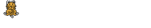

American Jokes 7

A little kid's in school, taking a true-false test and he's flipping a coin. At the end of the test he's flipping the coin again. The teacher says, "What are you doing?" He says, "Checking my answers."
[previous joke]
[next joke]
********************
解説＆コメント
子どもが、○×試験でコインを投げていた。試験の終わりに、また子どもがコインを投げはじめたので先生が、「なにをしているの？」と聞くと、子どもは、「見直ししているんです」。、、、(^^;
[American Jokes へ戻る]
[ホームへ戻る]
 American Jokes 7
American Jokes 7